Every visual read this repo currently records as OWED, in one place, so the three of them are answered in one sitting instead of three sessions.
This pack asks; it does not answer. No frame here carries a verdict, and nothing in it has been pre-judged — the captions are questions, and where a frame cannot answer the question it is put beside, it says so instead of standing in for one. Geometry-only e2e coverage is not acceptance; that is why these are pictures.
Recorded as owed: docs/CATALOG_VARIETY.md and src/templates/AGENTS.md record the design as landed; nobody has looked at it on a screen.
One question: does this design belong in the catalog as it stands?
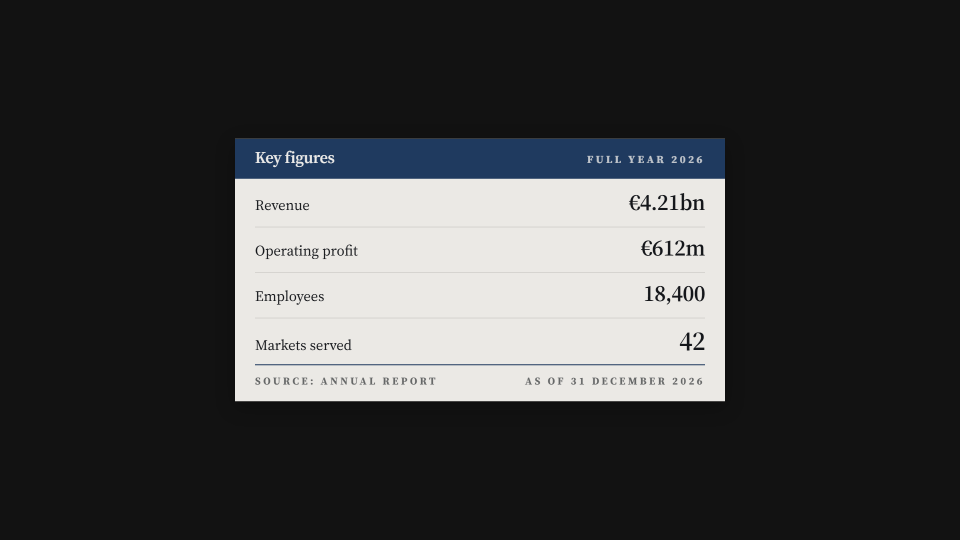
Does the two-column stat list read as a broadcast graphic — the label column, the figure column sharing one edge, the header band, the footer rule? This design is live in the catalog and has never been looked at on a screen.
Two rules it holds, both stated in its own source: a figure is rendered exactly as typed (nothing parses it, so “€4.21bn” and “12.4 %” survive intact), and the stat column asks for LINING numerals as well as tabular ones — the editorial serif’s default old-style figures ride at x-height and put “42” lower than “18,400” beside it. The numerals gate cannot see that: it measures whether a figure’s box moves, and old-style digits are perfectly stable at the wrong height.
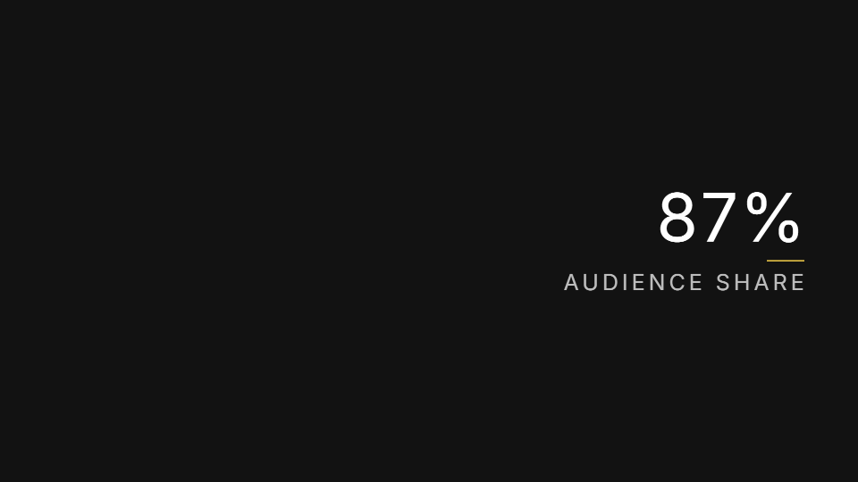
The design ig39 has to be worth picking INSTEAD of. Does the two-column list do a job this one cannot?
Same storefront shelf: Statistics & data → stat panel (src/templates/meta.ts).
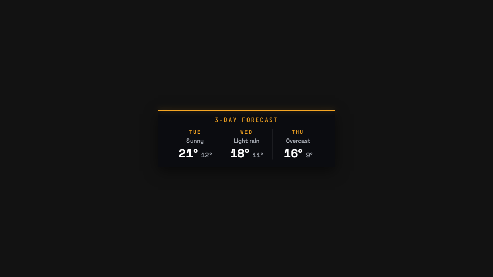
A second card in the same result. Is ig39 distinct enough to earn its slot in this row?
Same shelf; also the design written immediately before ig39 in the registry.
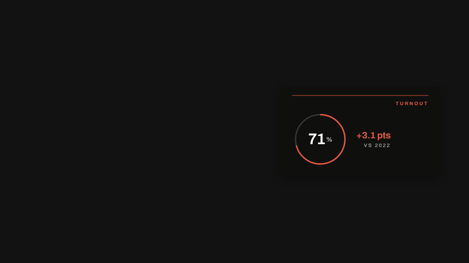
The one design that is both a shelf neighbour and family. Do these two look like they come from one house?
The election-night mini-pack (ig34–ig36), all siblings of lt25 “Masthead” — the editorial language ig39 was written into.
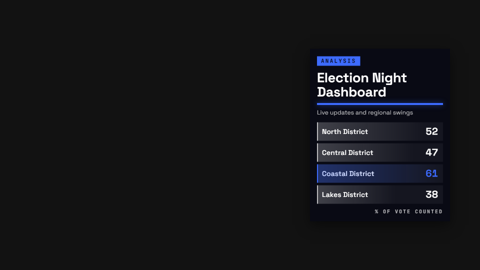
Not a shelf neighbour (it files under Results & standings), but the design ig39’s source argues against. Is the argument visible on screen — a fill that carries its own figure, versus a real grid column?
ig38 nests the figure’s cap INSIDE the growing bar, so the readout rides the tip; ig39’s label and figure are SIBLINGS, so the figures share an edge because they share a column.
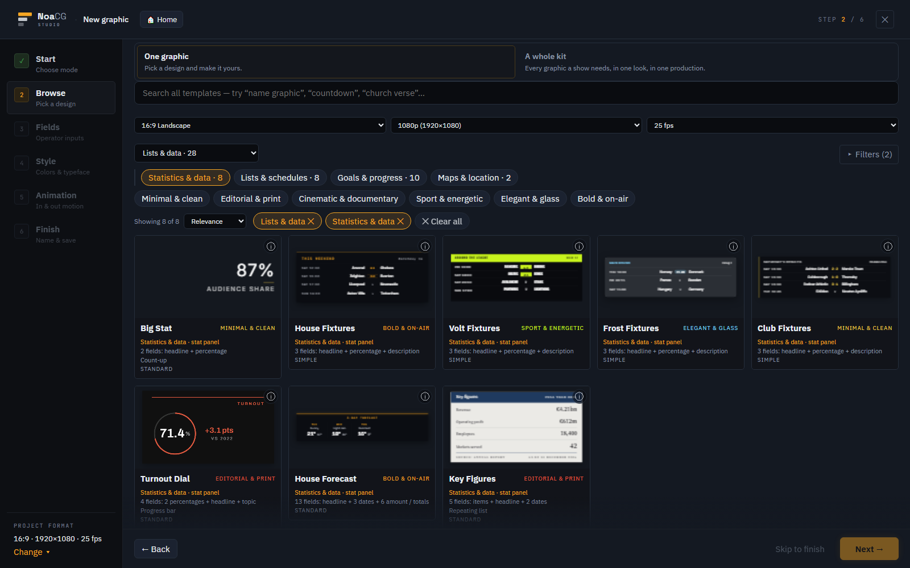
On the Browse grid, beside the cards it competes with for the same click: does “Key Figures” read as a distinct thing worth picking, or as one more card in the row?
The wizard’s Browse step, narrowed to infographics and paged until the card is on the grid — the walk a person makes, not a deep link past it.
Recorded as owed: docs/PLAYOUT_DASHBOARD.md §2: “The owner’s read is still owed.”
Two questions, verbatim from the contract: are the capped monitors too small to judge a graphic by, and does the space they free to the right of PROGRAM read as SIZED or as UNFINISHED?
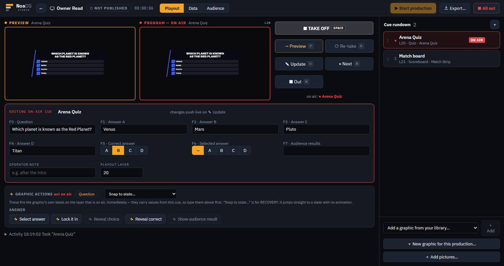
Are the capped monitors too small to judge a graphic by?
The two questions this pack exists to ask are the two the contract records as owed (docs/PLAYOUT_DASHBOARD.md §2). This is the size the complaint was measured at; a nominal 1920×1080 does not reproduce it.
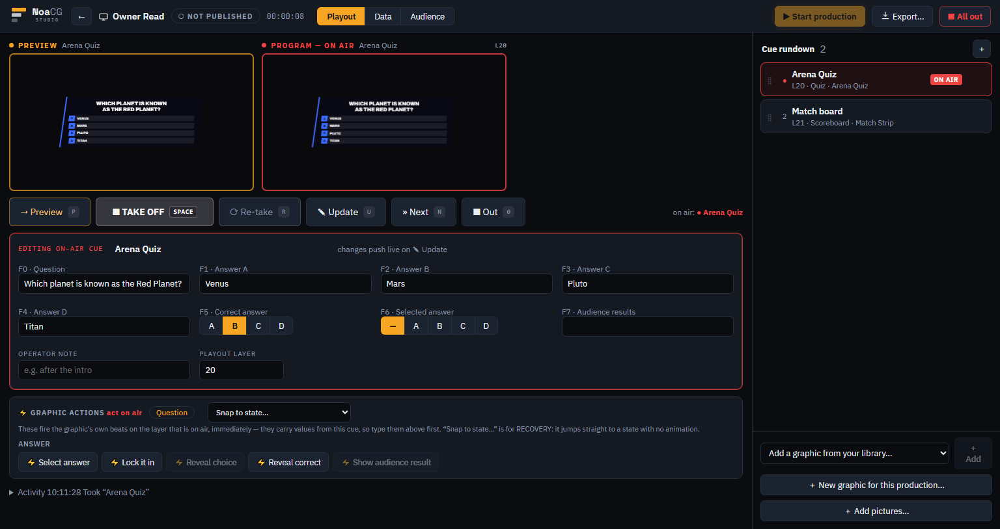
Does the space beside PROGRAM read as SIZED or as UNFINISHED?
The page is the only scroller; the header, the monitors and the cue rail are sticky rather than small. Nothing on this screen is shrunk to fit.
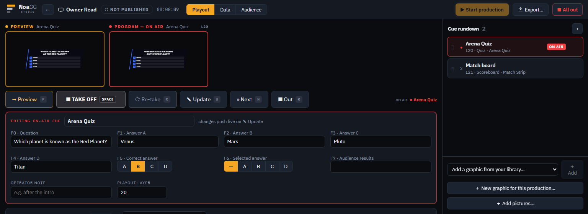
At the size where the page genuinely has to scroll: are the monitors still big enough to check a graphic before you air it?
The measured row the contract records for this size: the monitor block went 334px (60%) → 188px (34%), the editor stopped hiding 62px, and the page went from “could not scroll” to scrolling.
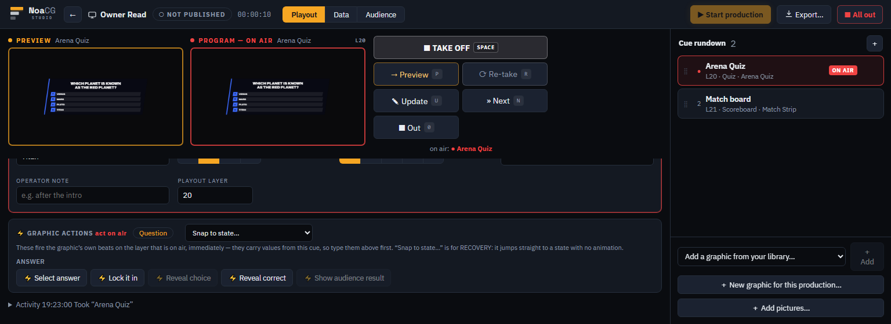
Scrolling the whole page to reach the editor — is that the trade you asked for, or does it cost more than the small editor did?
The owner’s words the rule was written from: “I don’t mind scrolling the whole page… I also don’t want it too small.”
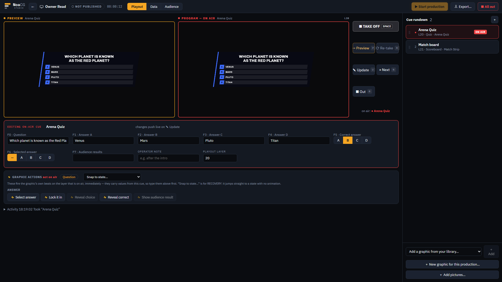
On a full 1080p screen the page never needed to scroll, before or after. Does the monitor cap earn itself here too, or does this screen now look empty?
Included because it is the size everything else gets judged at, and it is NOT the size the defect appeared at.
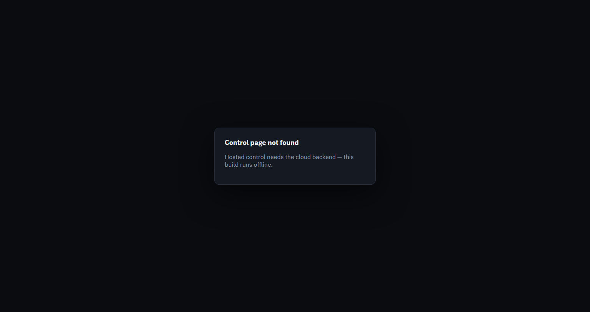
THIS FRAME DOES NOT ANSWER ANYTHING. It is here so the gap is visible: the hosted surface needs Supabase env plus a publish, and this checkout has neither by design. Is a hosted walk worth its own sitting, or does the in-app read settle the two questions for all three surfaces?
HostedControlPage.tsx mounts the same `.pd-monitors` / `.pd-main` / `.pd-editor` grid out of src/styles.css, so the cap and the scroll model are the same CSS — but the same CSS is an argument, not a picture, and this pack does not trade one for the other.
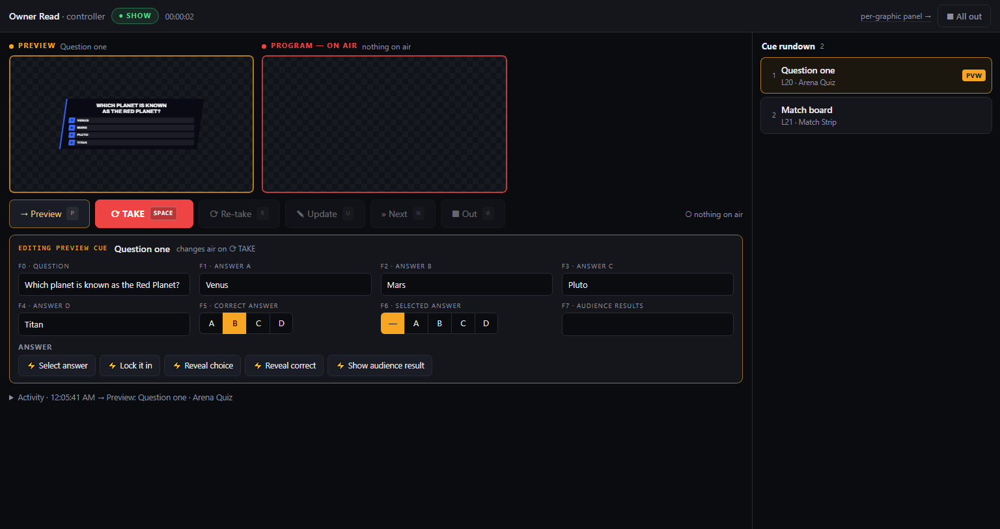
Same two questions, on the surface a dead network drops to: are the monitors too small to judge a graphic by, and does the space beside PROGRAM read as sized or as unfinished?
Driven through the bundled local relay, a cue selected onto PREVIEW. Three surfaces render this dashboard and the contract says they must not diverge — this one and the in-app page above are two of the three. ONE DIFFERENCE IS VISIBLE HERE, stated as an observation and not as a verdict: with nothing on air this surface offers all five ⚡ actions and carries no state chip, where the in-app page at the same moment (frame “Contextual cue controls — OFF AIR”) greys all five and says “not on air”.
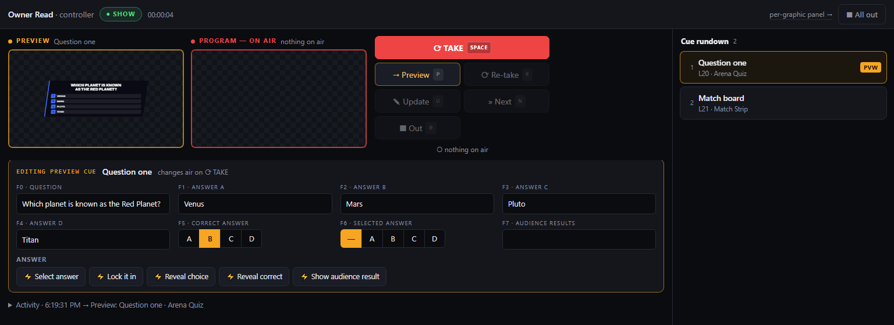
Does the exported surface behave like the in-app one at the size that forces a choice, or do the two diverge here?
Same package, same relay, viewport shortened and the page scrolled to its end.
Recorded as owed: docs/INTERACTIVE_PLAYOUT_PLAN.md “Verification contract”: a phase is never verified on a green build. Phases 0–6 are merged and have never been visually accepted.
One question per screen. This is a student-facing surface nobody has looked at, and students go live 2026-08-21.
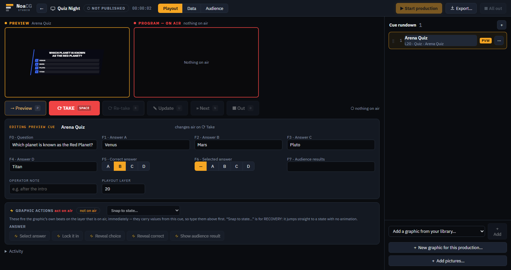
Every ⚡ action is greyed and the state chip says what the greying is judged against. Does a student reading this screen understand WHY the buttons are dead, without being told?
The greying is STRUCTURAL: a transition is offered only if the author drew that arrow from the current state. No expression language, ever.
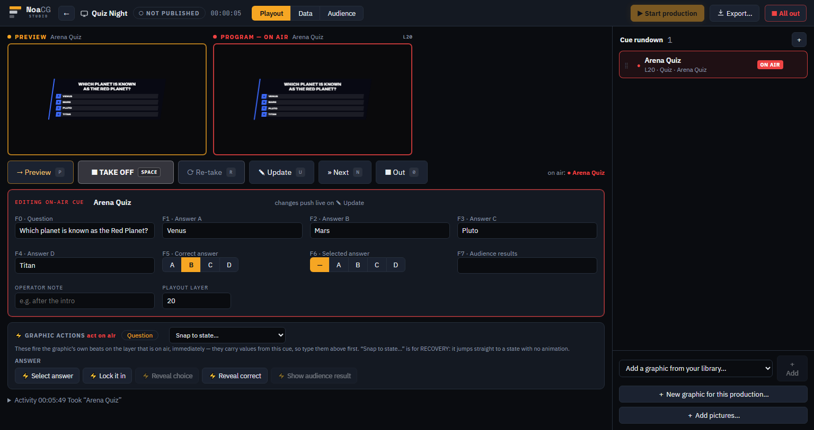
The same block after Take. Are the actions that are now legal the ones you would expect to be able to press at this moment in a quiz?
The chip names the machine state the legality is computed from; the verb bar shows its keyboard chips beside each control.
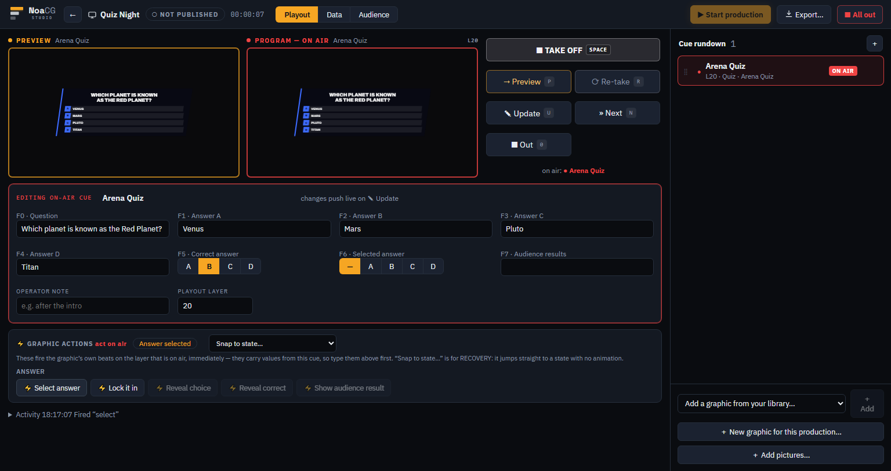
The action fired, PROGRAM changed and the legal set moved with it. Is the operator’s picture of “where the graphic is” trustworthy from this screen alone?
PROGRAM here is the same renderer the published /output page runs, so what this monitor shows is what airs.
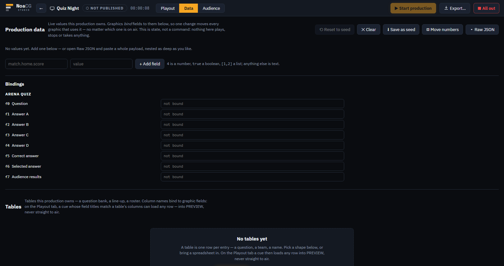
This state was a header and one sentence over ~830px of nothing until 2026-08-12. Does it now answer its own question — what a table is for here, and which column names would bind on THIS production?
The three doors are one cluster that holds together and wraps together, rendered inside the empty state while there is nothing else on the screen.
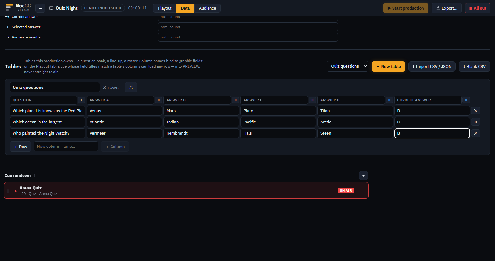
Three questions typed into the show’s own table. Is this a grid a teacher would prepare a lesson in, or does it want to be a spreadsheet import?
The preset’s columns spell the quiz graphic’s own field titles — the same words an imported CSV header is matched against.
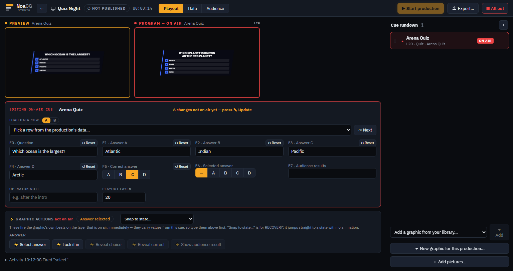
A table row became a cue’s field values and PREVIEW followed. Does the screen make it obvious that nothing has aired yet?
The load fills the DRAFT. Take is still the one door to Program.
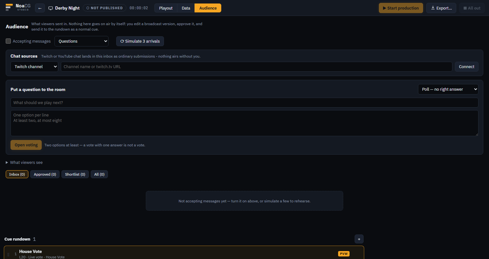
The inbox, the round composer and the viewer preview, with nothing in them. Does an operator opening this cold know what the room is being asked, and what to press first?
The audience plane runs on the LOCAL provider here — in memory, with a simulator — which is what makes this walk drivable offline.
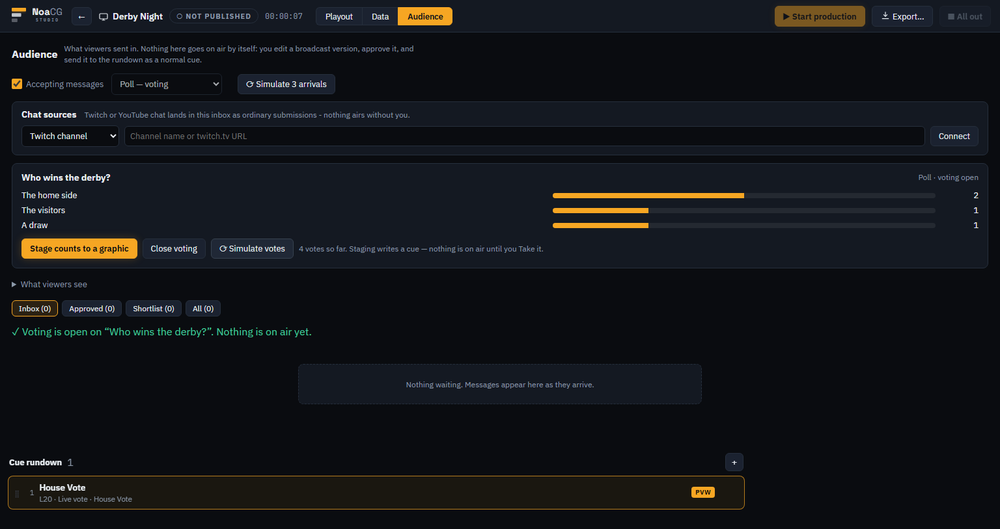
The round is open and the counts are climbing. Is the tally readable at a glance from across a gallery, and is “the room can see this right now” unmistakable?
The MODE travels with the round and the selector locks while it is open, so the operator’s screen cannot say “Questions” over a live poll.
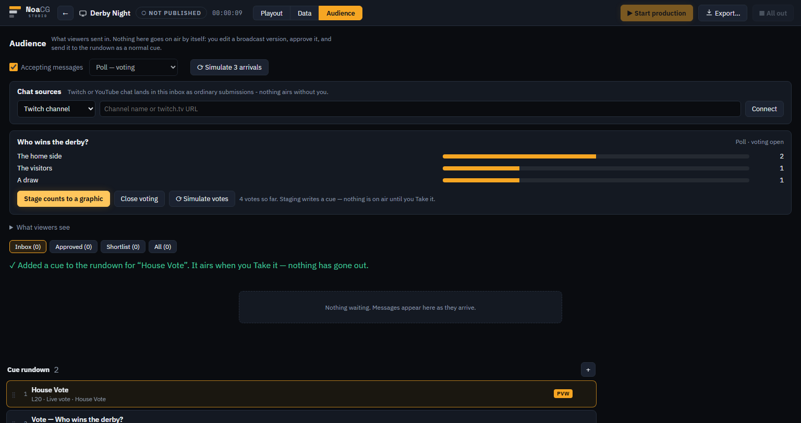
Staging wrote a cue and stopped. Does the surface say clearly enough that this has NOT aired?
The counts land as the poll board’s own `Label | count` idiom, so the renderer never learns votes exist. Re-staging updates that one cue rather than adding a row per refresh.
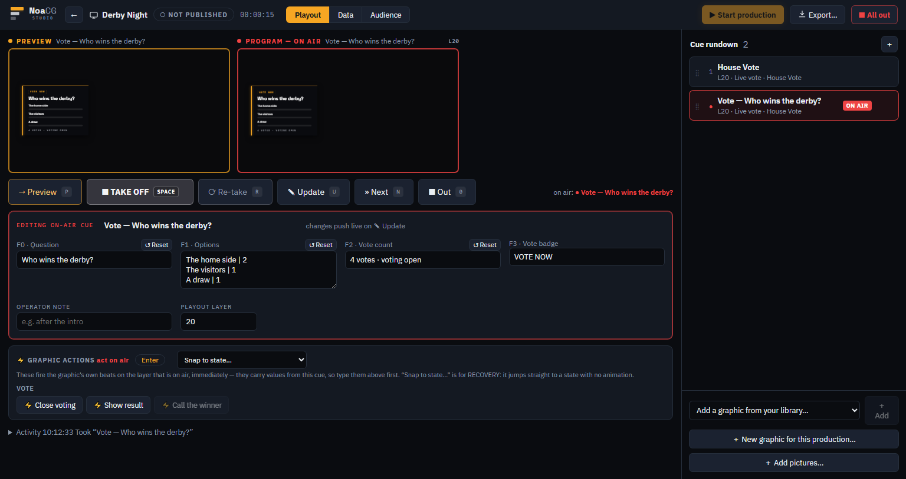
The audience’s own counts, aired by an operator pressing Take. Is the board on PROGRAM one you would put on a channel?
This is the rule the whole plane exists for: nothing a viewer wrote reaches Program without an operator pressing Take.
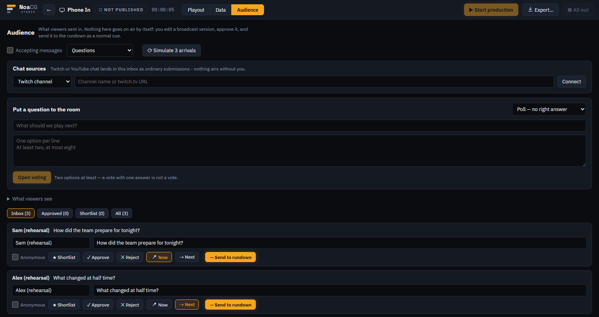
A producer has queued what the presenter reads next. From this screen, is it obvious which question is in the presenter’s hand right now — and that pointing at one has not put it in front of anyone else?
The pointers are IDS, so a later tidy-up of the wording follows into the presenter’s hand. They reach no rundown and no command log.
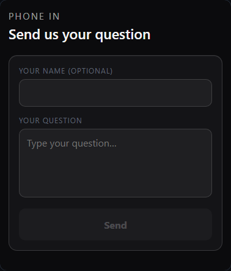
This is what a phone in the hall shows. Is it something you would read a URL out on air for?
joinSurface.ts is the ONE renderer both the public /join page and this operator preview mount, so this frame is the real page and not a drawing of it. Cropped to the preview’s phone-shaped frame.
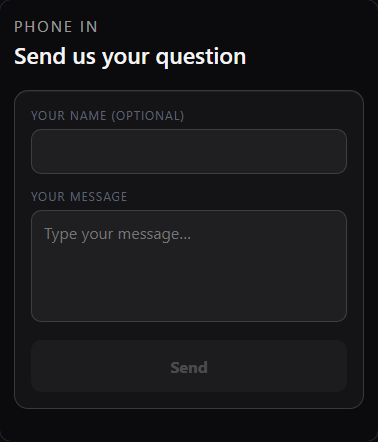
The mode changed what the room is asked for. Do the two modes read as different enough to matter, or is this one screen with a different heading?
The operator preview is read-only by design: an operator cannot put words in the audience’s mouth from it.
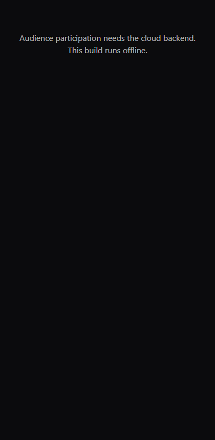
THIS FRAME DOES NOT ANSWER ANYTHING EITHER. An offline build has no audience plane and says so instead of showing a form that could never send. Is that the right thing for a self-hosted student build to say?
The hosted walk — a real publish, a real phone, the presenter’s own tablet page — needs Supabase env and a signed-in account, and is owed separately.